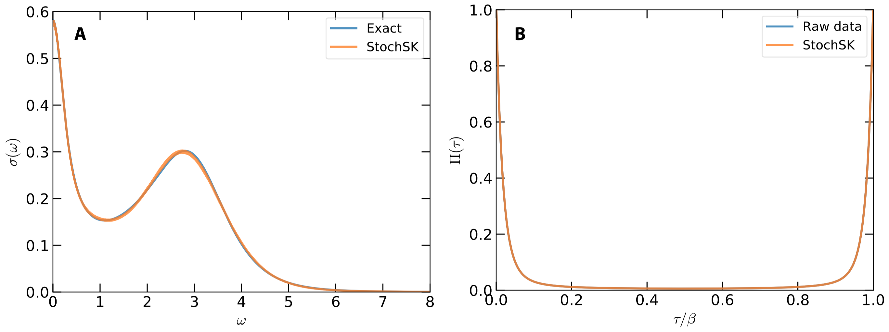

In order to demonstrate usefulness of the ACFlow toolkit, four examples are illustrated in this section. These examples cover typical application scenarios of the ACFlow toolkit, including analytical continuations of
- Matsubara self-energy function
- Matsubara Green's function
- Imaginary time Green's function
- Current-current correlation function
within the script mode or standard mode. All of the necessary source codes and data files, which can be used to reproduce the results as shown in this section, are placed in the /home/your_home/acflow/test/T* folders.
Current-Current Correlation Function
The former three examples only concern fermionic correlators. How about bosonic correlators? In this example, we will demonstrate how to perform analytical continuation simulation for a typical bosonic correlator, the current-current correlation function $\Pi(\tau)$, to obtain the optical conductivity $\sigma(\omega)$. Note that this example is taken from Phys. Rev. B 82, 165125 (2010) directly.
The exact optical conductivity $\sigma(\omega)$ reads:
\[\sigma(\omega) = \left\{ \frac{W_1}{1 + (\omega/\Gamma_1)^2} + \frac{W_2}{1 + [(\omega - \epsilon)/\Gamma_2]^2} + \frac{W_2}{1 + [(\omega + \epsilon)/\Gamma_2]^2} \right\} \frac{1}{1 + (\omega/\Gamma_3)^6},\]
where $W_1 = 0.3$, $W_2 = 0.2$, $\Gamma_1 = 0.3$, $\Gamma_2 = 1.2$, $\Gamma_3 = 4.0$, and $\epsilon = 3.0$. The current-current correlation function $\Pi(\tau)$ can be evaluated from $\sigma(\omega)$ by using the following equation:
\[\Pi(\tau) = \int^{\infty}_{-\infty} K(\tau,\omega) \sigma(\omega)~d\omega,\]
where the kernel function $K(\tau,\omega)$ is different from the general form. It reads:
\[K(\tau,\omega) = \frac{1}{\pi} \frac{\omega e^{-\tau\omega}}{1- e^{-\beta\omega}}.\]
In this case, $\beta$ is fixed to be 20.0.
At first, we use the above equations to prepare $\Pi(\tau)$. The error bar of $\Pi(\tau)$ is fixed to 1e-4. The calculated $\Pi(\tau)$ is written in chit.data.
Next, we conduct analytical continuation simulation as usual. The used configuration file is attached as follows. Here, the StochSK solver is adopted, so the solver parameter is ''StochSK'' and the grid parameter is ''btime''. And the Shao-Sandvik algorithm is applied to seek optimal $\Theta$, so the method parameter is ''chi2min''. The users can further increase the values of nfine, ngamm, and nstep parameters to improve computational accuracy.
[BASE]
finput = "chit.data"
solver = "StochSK"
ktype = "bsymm"
mtype = "flat"
grid = "btime"
mesh = "linear"
ngrid = 501
nmesh = 801
wmax = 8.0
wmin = 0.0
beta = 20.0
offdiag = false
[StochSK]
method = "chi2min"
nfine = 40000
ngamm = 1000
nwarm = 1000
nstep = 20000
ndump = 200
retry = 10
theta = 1e+6
ratio = 0.90The calculated results are illustrated in Fig.1. From Fig.1(a), it is clear that the main features of optical conductivity are successfully captured by the StochSK solver. Both the sharp Drude peak at $\omega = 0$ and a broad satellite peak around $\omega = 3.0$ are well reproduced. As is seen in Fig.1(b), the reconstructed $\tilde{\Pi}(\tau)$ coincides with the original $\Pi(\tau)$.

Figure 1 | Analytical continuation of current-current correlation function by using the stochastic analytical continuation (Sandvik's algorithm). (a) Simulated and exact optical conductivities $\sigma(\omega)$. (b) Simulated and exact current-current correlation functions $\Pi(\tau)$.